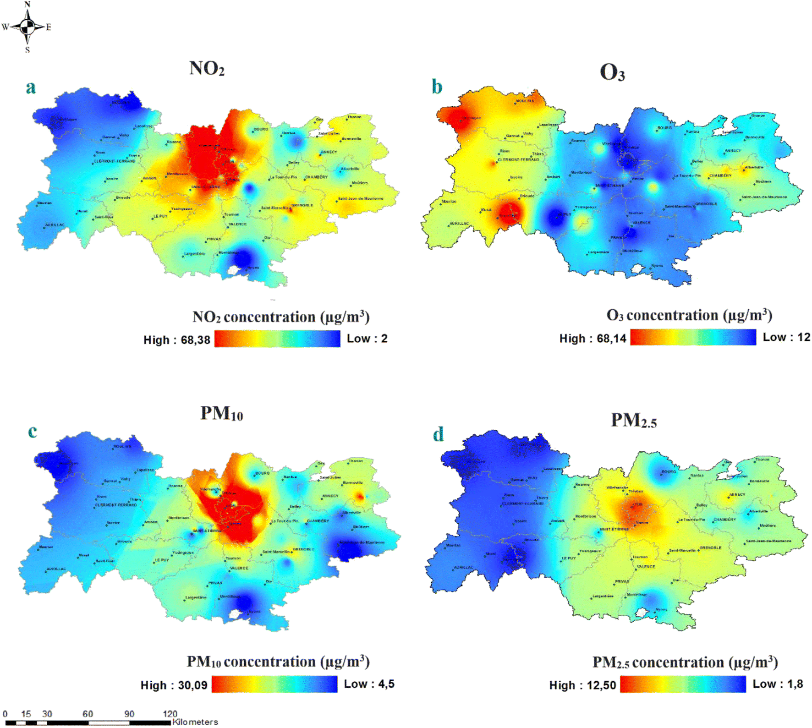

The COVID-19 pandemics affected many the Economy of many countries causing them many troubles in their economy system. During COVID-19 related lockdowns, one of the activities like air travel decreased to prevent the spread of the novel coronavirus. So, COVID-19 affected the number of the flights and the airplanes used in France starting for March 2020, causing glitch in France’s Economic system.
Economic:France's aerospace and automobile industries are particularly exposed to the COVID-19's effects. Both sectors are important sources of employment and wealth creation: the automobile sector employs 4,000 people, generates 900,000 jobs, and accounts for 16% of French GDP, while the aerospace sector employs 300,000 people and generates €58 billion in annual revenue; however, the restrictions have resulted in significant losses in both industries. Automotive companies lost 80% to 90% of their revenue, while aerospace companies, particularly Airbus, lost €500 million. In 2020, the epidemic and lockdowns impacted the French auto market by 25.5%. The total number of sales for the year was 1.65 million, the lowest since 1975. The impact of EU and government incentives on AFV sales is significant.
Air quality:France imposed a complete lockdown from March 17th to May 11th, 2020, to combat the rapid spread of coronavirus diseases (COVID-19) over the world. This lockdown had a significant impact on atmospheric pollution levels because to the restrictions on human activities. NO2, NO, and CO levels in Lyon, the core of the region, were reduced by 67%, 78%, and 62%, respectively, resulting in an 80% reduction in road traffic. O3, PM10, and PM2.5 levels, on the other hand, increased by 105%, 23%, and 53%, respectively, during the lockdown as shown in figure 1. The rise in ozone is due to a decrease in NO and other compounds linked with human activity that consume ozone.
